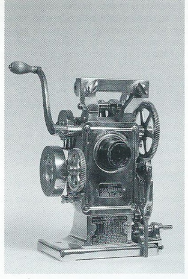

Proiettore a manovella
Scuola di provenienza: Liceo Statale "P. E. Imbriani", Avellino
Settore: Ottica
Costruttori: Power's N., New York, USA
Materiali: Ferro
Accessori: Manca l’obiettivo, la lampada ad arco, reostato, supporto a nastro e struttura rigida
Stato di conservazione: Buono
Descrizione: Tipica macchina di inizio secolo(datata 1914) che serviva a proiettare immagini reali ed ingrandite di figure piane. Rispecchia pienamente la pomposità delle costruzioni americane dell’ epoca con molte ruote dentate e il forte uso di nichelatura per proteggere i meccanismi dalla ruggine.L'oggetto presente in vetrina è partedi un equipaggiamento più complesso, prodotto nei primi anni del 1900 e distribuito in Europa tramite la Gran Bretagna. Il meccanismo fa parte della sesta generazione di prodotti ad opera dell'azienda Nicholas Power& Co. , in attività dal 1897 con il primo della serie fino al 1925 con la settima ed ultima generazione, anno in cui gli affari dell'azienda furono consolidati nella I.P.C. (international projector company).